芮成钢：《虚实之间》
有十年记者生涯对东西方文化的洞悉，又有与奥巴马等政要零距离接触…
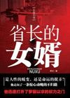
省长的女婿
￥ 5.98
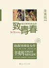
辛夷坞：致青春
￥ 5.00
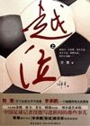
越位
￥ 2.99
扫黑
￥ 6.40
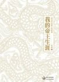
我的帝王生涯
￥ 4.00
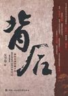
南水北调书记
￥ 5.98
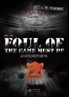
1／14第一季
￥ 4.00
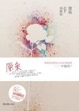
辛夷坞：原来
￥ 4.50
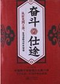
奋斗的仕途
￥ 3.00
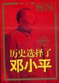
历史选择了邓小平
￥ 6.00
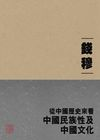
钱穆看中国文化
￥ 8.00
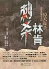
刺杀林肯
￥ 3.00
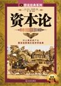
资本论
￥ 3.00
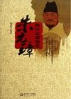
为什么是朱元璋
￥ 4.00
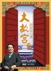
阎崇年：大故宫
￥ 5.00
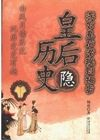
皇后阁历史
￥ 4.00
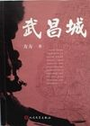
武昌城
￥ 4.50
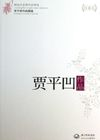
贾平凹作品选
￥ 3.00
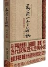
最后一个匈奴
￥ 4.00
岁月与性情
￥ 8.00
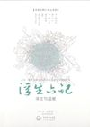
浮生六记
￥ 3.00
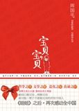
周国平：宝贝
￥ 8.00
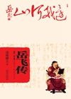
岳飞传
￥ 3.00
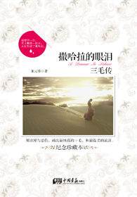
撒哈拉的眼泪
￥ 5.98